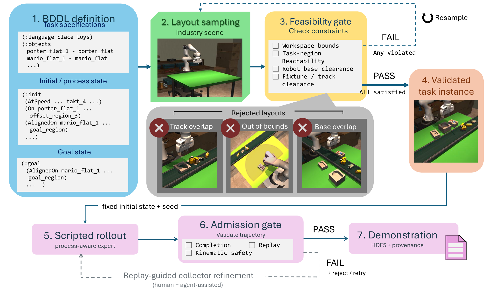
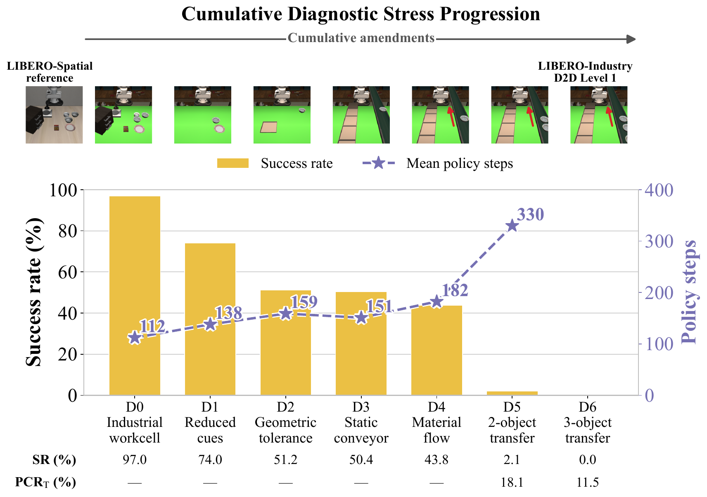
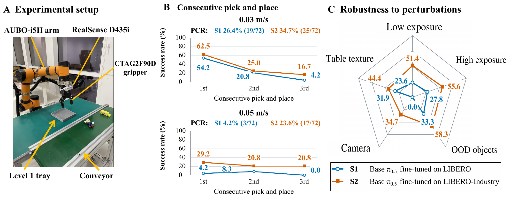

Train and held-out split
Use the training split for policy learning and the held-out split for official reporting.
1Institute of AI for Engineering, Tongji University
2The Chinese University of Hong Kong
3University of Aberdeen
4University of Cambridge
216 tasks · 180 training · 36 held-out evaluation
S = Static · D = Dynamic
Industrial manipulation in flexible manufacturing, e.g., high-mix, low-volume (HMLV) electronics assembly, requires robot policies to adapt to changing products and production conditions. Such settings impose industrial process constraints, including product variants, moving material flows, finite execution windows, and tight geometric tolerances. However, existing evaluation frameworks do not systematically capture these constraints when assessing generalist robot policies. To address this gap, we introduce LIBERO-Industry, a novel benchmark built on the widely used robot learning benchmark LIBERO, that translates the aforementioned industrial constraints into controllable task conditions and measurable success criteria. Specifically, LIBERO-Industry comprises three classic task scenarios: Static-to-Dynamic (S2D) loading, Dynamic-to-Static (D2S) unloading, and Dynamic-to-Dynamic (D2D) transfer. The suites contain 216 tasks in total that systematically vary object geometry, conveyor speed, interaction-window duration, and geometric acceptance region size. Extensive experiments across five generalist robot policies (including vision-language-action models and world-action models) show that performance progressively degrades as industrial constraints are introduced and combined. Under a shared fine-tuning and evaluation protocol, the LIBERO-Industry co-training condition achieved higher observed target-transfer completion than the original-LIBERO condition.
One pipeline converts BDDL task specifications into validated task instances and admitted demonstrations.

We use the Aubo i5h equipped with the CTAG2F90D gripper for real-world validation.
Native trajectory archives for benchmark training and evaluation.
Real-world HDF595 accepted Aubo i5h and CTAG2F90D demonstrations with aligned external and wrist-camera observations.
Use the training split for policy learning and the held-out split for official reporting.
Resources follow the benchmark’s three source–destination dynamics.
SR: Complete-task success.
PCR-T: Target-transfer completion.
PCR-S: Final placement completion, including pre-existing destination workpieces.
Five original-LIBERO-fine-tuned checkpoints, without further LIBERO-Industry fine-tuning. Evaluated on 36 held-out tasks, with 10 initial states per task: 360 rollouts per policy.
| Policy | SR | PCR-T | PCR-S |
|---|---|---|---|
| π0.5 | 0.0 | 0.4 | 12.5 |
| OpenVLA-OFT | 0.0 | 0.0 | 11.2 |
| UniVLA | 0.0 | 0.0 | 12.2 |
| X-VLA | 0.0 | 0.0 | 11.9 |
| Cosmos Policy | 0.0 | 0.0 | 11.8 |
All five policies recorded 0/360 complete-task successes. PCR-S includes pre-existing destination workpieces that remain valid; their mean initial-state baseline is 12.3%. PCR-T isolates newly completed target transfers.
The cumulative D0–D6 diagnostic stress progression shows how generalist robot policies respond as industrial constraints accumulate.

Failure classification: Pre-reach policy freeze → Reach failure → Grasp acquisition failure → Lift failure (early slip) → Dropped midway → Post-release goal failure
An Aubo i5h workcell evaluation compares policies fine-tuned on LIBERO and LIBERO-Industry across consecutive pick-and-place trials and controlled perturbations.

Paper
@misc{sung2026liberoindustry,
title={{LIBERO-Industry}: Benchmarking Robotic Manipulation under Industrial Process Constraints},
author={Sung, Ming Shin Cindy and Duan, Leijiahao and Wang, Haoxiang and
Tan, Boning and Fu, Liangna and Tan, Chao and Li, Yafu and
Chen, Yulong and Wan, Chaoqun and Huang, Zhen and Liang, Shuxian and
Hua, Xian-Sheng},
year={2026},
eprint={2610.16782},
archivePrefix={arXiv},
primaryClass={cs.AI},
doi={10.48550/arXiv.2610.16782},
url={https://arxiv.org/abs/2610.16782}
}LIBERO-Industry builds on LIBERO, the lifelong robot-learning benchmark.